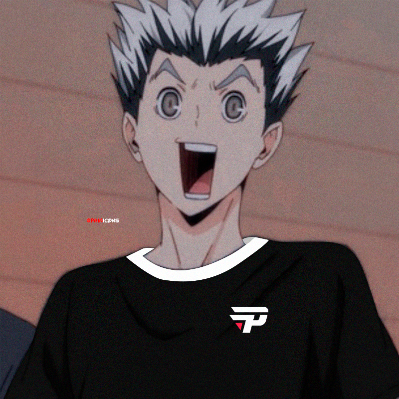
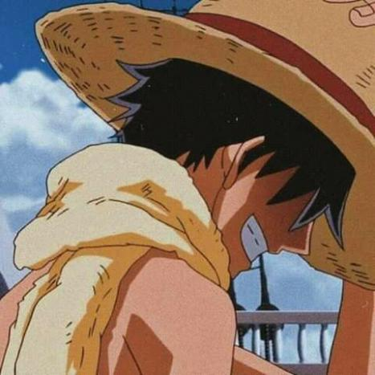

Lista de animes do vinis
ONE PIECE
HAIKYUU
FATE
UBW
HEAVEN´S FEEL
ZERO
NARUTO
DEMON SLAYER
Porque varios fates?
Fate é um anime inspirado em um jogo, e cada rota do jogo ganhou um anime diferente
 